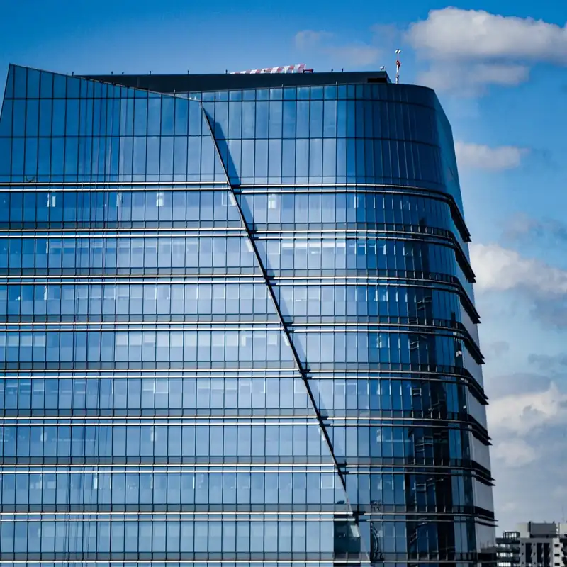
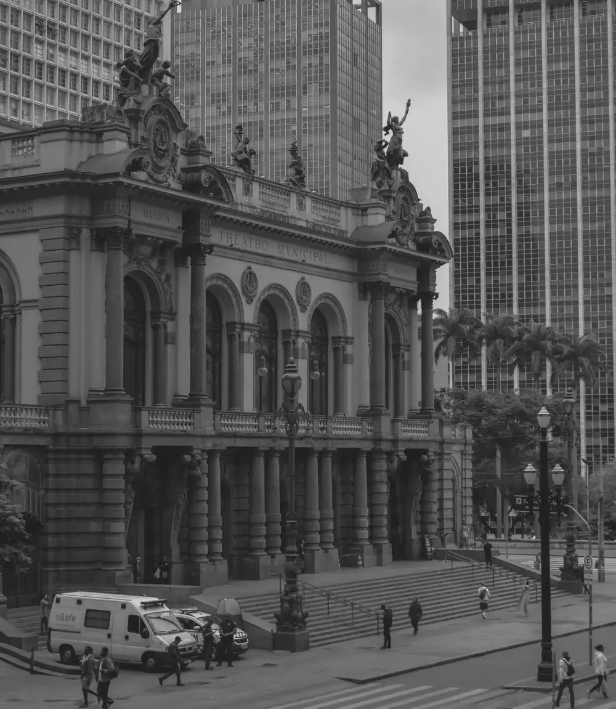

Luann
Batuira
Portfólio de
Fotografia

Sobre mim
A fotografia me acompanha desde os meus 16 anos, mas foi nos últimos dois que passei a integrar essa paixão ao meu catálogo de serviços. Após atuar inicialmente na cobertura de eventos locais, encontrei minha verdadeira especialidade: a fotografia de arquitetura.
Atuando na cidade de São Paulo, meu olhar se desenvolveu e amadureceu justamente pela observação atenta das formas e da complexidade da nossa metrópole.
Inspirado pela paisagem urbana, meu portfólio é construído majoritariamente em preto e branco, uma escolha intencional para destacar as linhas, a geometria e o verdadeiro jogo de luz e sombra de cada ambiente.

Viaduto Reinaldo de Oliveira, 2024
Meu
trabalho
Preto e branco

Coloridas
São Paulo Corporate Towers, 2026
